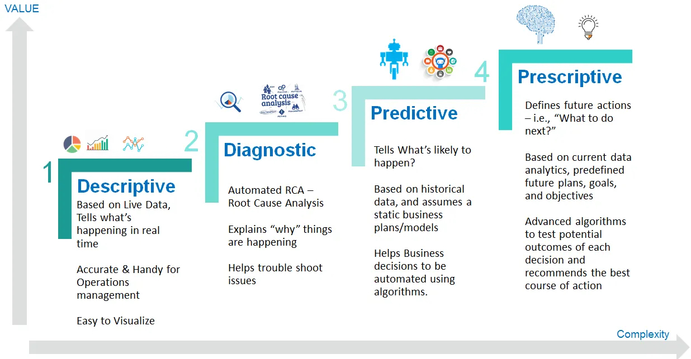

My current research interests are Large-Scale Optimization, Machine Learning, Data Analytics and applications to Retail, Higher Education, Alternative Data, Public Policy, and Insurance. My work mostly lies in Predictive and Prescriptive part of data science:
An optimization model was jointly developed with A.T.Kearney to optimize promotion planning and assortment selection to benefit the overall revenue. System is implemented in 2014 and saves about 5 percent of the total purchasing cost annually.
2. Forecast and Optimization for clinic
The problem is to accurately forecast the number of patients by type to each clinic. Sophisticated forecast models that utilize inputs from time, weather, social media data like Google trend queries are used to predict the number of visits. These forecasts then serve as input to calculate the inventory necessary for each type of sickness, and a nurse scheduling system is created accordingly.
3. Local Across-Store Inventory Transfer Optimization
The problem is to ship medical drugs from stores with excess to stores with needs so as to: 1) reduce potential obsolesces in inventory; 2) better position drugs to meet customer demand; 3) to aggregate the shipment in such that transportation costs are reduced. The model is piloted in 121 stores and is expected to produce $30 to $50 million savings as well as reduction in out-of-stock (OOS).
4. Pharmacy Department Register Simulation
Each store has a different volume in terms of patients visit and service time.The simulation model has been created to adjust the number of registers to be installed in each store, as a function of service time and customer volume.
5. Order-picking Staff Daily Scheduling System Optimization
The staff scheduling system is built to optimize the number of staff required to picking orders. It saves about than 20 to 30 % labor cost than the previous implementation.
6. Order-Picking Batching and Routing
Optimized picking sequence and TSP-styled routing are created based on individual store layout.
7. Time Series Anomaly Detection
Using different machine learning for stock price anomaly detection. Please see the dashboard Stock Price Anomaly Detection